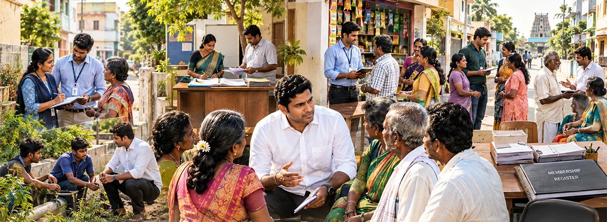

We The Leaders
People with willingness, lived experience, local credibility and a commitment to public purpose.
Build the skills, knowledge and values to lead meaningful work in your community.
Start where you are today. Each route builds practical skills, field experience and the confidence to take your next step.
The Abdul Kalam Fellow journey
Build your foundation, develop leadership capability and then apply it to a public problem over 100 days.
See how the journey worksFind your purpose and set your leadership intent.
02 · Classroom4 weeksBuild capability through practice, evidence and feedback.
03 · Continued learning100 daysLead a real challenge and demonstrate public impact.
Our vision
We The Leaders brought tens of thousands of people to the starting line. The Centre equips them with practical tools, techniques and processes drawn from proven practice worldwide, so they can begin their political journey better prepared to engage the public.
People with willingness, lived experience, local credibility and a commitment to public purpose.
People better prepared to exercise judgement, organise others, engage institutions, solve public problems and lead with public purpose.
Find people with commitment, credibility and potential.
Build knowledge, skills, values and judgement.
Enable real-world practice through community action.
Provide mentoring, networks and continued growth opportunities.
What makes it world-class
Orientation, capability, practice and public impact are visible before anyone begins, with evidence reviewed at each stage.
Methods drawn from leading policy schools and evaluation labs, taught through Tamil Nadu’s wards, panchayats and real field work.
Programmes are free to attend and the reading is open to everyone. Cost is never a reason to be left out.
Learning, tools and the ladder itself in Tamil and English — designed for the people it is meant to serve.

If we want politics to work differently,
we must prepare people to practise politics differently.
Nothing is gated. Every core resource is free to open and use.
Know someone who should be in the room? Every ward has a person who already does the work and will never put themselves forward. Put their name in →
Newsletter
One short email when there is something worth your time: the launch on October 15, programme dates, events near you and new reading.
We’ll write to when there’s news. See you on October 15.